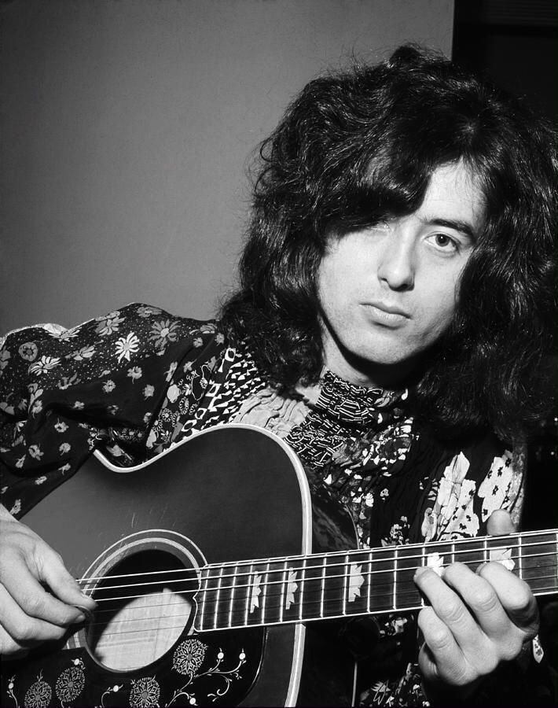
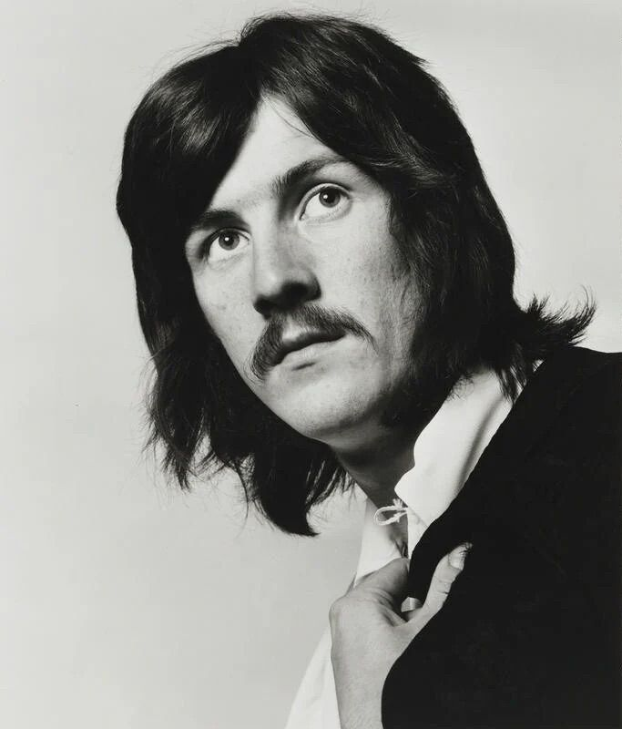

No ano de 1966, o até então guitarrista de estúdio mais requisitado da Inglaterra, Jimmy Page, ocupou o cargo vago de baixista da banda The Yardbirds, não demorando muito para assumir como guitarrista do grupo. Entretanto, o supergrupo de rock estava cansado de tantas gravações e turnês, o que levou ao fim da banda ainda durante a turnê. Jimmy Page foi o único integrante
de rock, dessa vez liderado por ele mesmo. The New Yardbirds era o nome do novo projeto, que, inicialmente, cogitava Jeff Beck e Jimmy Page nas guitarras, Keith Moon e John Entwistle do The Who na bateria e no baixo, respectivamente, e, nos vocais, nomes como Steve Winwood e Steve Marriott foram considerados. A ideia inicial de Page não se concretizou, e a turnê dos Yardbirds ainda precisava ser cumprida. Então, Page escolheu a dedo os novos membros: Robert Plant, um jovem vocalista prodígio que havia se destacado na Band of Joy; John Bonham, sugestão de Plant para o cargo de baterista, também integrante da Band of Joy; e John Paul Jones, um velho conhecido dos estúdios frequentados por Page, multi-instrumentista que assumiu as funções de tecladista e baixista na nova formação. Com essa nova equipe, a turnê dos Yardbirds foi concluída. A nova formação mostrava-se extremamente eficaz.
Jimmy Page é um dos guitarristas mais influentes da história do rock, conhecido por sua técnica refinada e por ser o principal arquiteto sonoro do Led Zeppelin. Antes da fama, foi um requisitado músico de estúdio, colaborando com grandes nomes da cena britânica. Page uniu virtuosismo com criatividade, fazendo dos riffs uma forma de arte. Sua abordagem misturava blues, psicodelia e ocultismo, resultando em uma sonoridade única. Além de guitarrista, foi o principal produtor da banda, moldando cada álbum com precisão. É reconhecido mundialmente por transformar a guitarra elétrica em protagonista definitiva do rock.

O legado de Jimmy Page transcende o Led Zeppelin. Sua inovação técnica, como o uso de afinações alternativas e do violino de arco na guitarra, inspirou gerações de músicos. O símbolo "Zoso" que representa sua identidade mística tornou-se ícone cultural. Seu estilo ajudou a definir o hard rock e o heavy metal, influenciando bandas ao redor do mundo. Mesmo décadas após o fim do Zeppelin, suas gravações continuam sendo referência de produção e criatividade. Page é mais do que um músico: é um alquimista do som, cuja obra ainda ressoa com poder e reverência no universo da música contemporânea.
Robert Plant é o lendário vocalista do Led Zeppelin, conhecido por sua voz poderosa, timbre único e presença de palco hipnotizante. Influenciado pelo blues, folk e músicas orientais, Plant criou um estilo vocal que desafiava padrões. Foi descoberto por Jimmy Page ainda jovem, mas já mostrava maturidade artística. Suas performances traziam energia visceral, misticismo e sensualidade, elementos que ajudaram a moldar a identidade da banda. Além de cantar, contribuía liricamente com temas que iam de mitologia a experiências espirituais. Plant é um frontman emblemático cuja imagem permanece atrelada à essência do rock clássico.


O legado de Plant é profundo: sua abordagem vocal abriu caminho para novos padrões de interpretação no rock. Suas letras poéticas e performances carregadas de emoção influenciaram inúmeros vocalistas. Mesmo após o fim do Zeppelin, manteve uma carreira solo admirada, explorando diversos gêneros com autenticidade. Plant ajudou a tornar o vocalista uma figura quase xamânica dentro do palco, unindo técnica vocal com teatralidade. Sua imagem mítica e sua entrega continuam a inspirar músicos e fãs. É reverenciado não só como cantor, mas como símbolo de uma era onde o rock buscava o transcendental.
John Paul Jones é o multi-instrumentista e cérebro silencioso do Led Zeppelin. Antes da banda, já era um renomado arranjador e baixista de estúdio, colaborando com grandes nomes da música britânica. No Zeppelin, assumiu o baixo e os teclados, sendo responsável por linhas sofisticadas e arranjos complexos que enriqueciam a sonoridade do grupo. Sua versatilidade musical permitia transitar com maestria entre o rock pesado, o blues, o funk e a música clássica. Compondo com sutileza e precisão, Jones era o equilíbrio técnico da banda, contribuindo de forma decisiva para o som inconfundível do Zeppelin.

O legado de John Paul Jones é de refinamento e profundidade musical. Sua habilidade de unir harmonia e groove influenciou gerações de baixistas e arranjadores. Muitas das texturas e atmosferas únicas da banda vieram de seus teclados e sintetizadores. Mesmo longe dos holofotes, sua importância no Zeppelin é inegável. Após o fim da banda, Jones continuou explorando música com inovação, inclusive no rock progressivo e na música erudita. Sua abordagem intelectual ao rock elevou o gênero e ampliou suas fronteiras. É respeitado como um dos músicos mais completos da história do rock.
John Bonham, conhecido como “Bonzo”, foi o baterista do Led Zeppelin e uma das figuras mais marcantes da história do rock. Com um estilo agressivo, preciso e criativo, trouxe ao Zeppelin uma força rítmica inconfundível. Sua pegada era pesada e técnica, influenciada por bateristas de jazz como Gene Krupa e Max Roach. Ao contrário da maioria dos bateristas da época, Bonham estruturava seus grooves em cima dos riffs de guitarra e não das linhas de baixo, criando dinâmicas únicas e polirritmias inovadoras. Seu solo “Moby Dick” se tornou um marco nos shows da banda.

O impacto de Bonham no rock é profundo. Seu estilo estabeleceu um novo padrão para a bateria no gênero, influenciando incontáveis músicos nas décadas seguintes. É considerado por muitos o maior baterista de rock de todos os tempos. Mesmo após sua morte precoce, seu legado perdura — o som visceral que imprimia em cada faixa do Zeppelin se tornou referência. A ausência de Bonham foi determinante para o fim da banda, evidenciando seu papel insubstituível. Seu nome é sinônimo de potência, musicalidade e inovação na bateria.


erat. Vestibulum sagittis felis ac elementum commodo. Proin sollicitudin congue fermentum. Nam suscipit nulla nibh, in congue leo varius sit amet. Morbi in elit fringilla nunc facilisis imperdiet in sed elit. Integer blandit porta lacinia. Donec convallis interdum faucibus. Nam non mattis mauris, at congue magna.

erat. Vestibulum sagittis felis ac elementum commodo. Proin sollicitudin congue fermentum. Nam suscipit nulla nibh, in congue leo varius sit amet. Morbi in elit fringilla nunc facilisis imperdiet in sed elit. Integer blandit porta lacinia. Donec convallis interdum faucibus. Nam non mattis mauris, at congue magna.

erat. Vestibulum sagittis felis ac elementum commodo. Proin sollicitudin congue fermentum. Nam suscipit nulla nibh, in congue leo varius sit amet. Morbi in elit fringilla nunc facilisis imperdiet in sed elit. Integer blandit porta lacinia. Donec convallis interdum faucibus. Nam non mattis mauris, at congue magna.
erat. Vestibulum sagittis felis ac elementum commodo. Proin sollicitudin congue fermentum. Nam suscipit nulla nibh, in congue leo varius sit amet. Morbi in elit fringilla nunc facilisis imperdiet in sed elit. Integer blandit porta lacinia. Donec convallis interdum faucibus. Nam non mattis mauris, at congue magna.
erat. Vestibulum sagittis felis ac elementum commodo. Proin sollicitudin congue fermentum. Nam suscipit nulla nibh, in congue leo varius sit amet. Morbi in elit fringilla nunc facilisis imperdiet in sed elit. Integer blandit porta lacinia. Donec convallis interdum faucibus. Nam non mattis mauris, at congue magna.
erat. Vestibulum sagittis felis ac elementum commodo. Proin sollicitudin congue fermentum. Nam suscipit nulla nibh, in congue leo varius sit amet. Morbi in elit fringilla nunc facilisis imperdiet in sed elit. Integer blandit porta lacinia. Donec convallis interdum faucibus. Nam non mattis mauris, at congue magna.
erat. Vestibulum sagittis felis ac elementum commodo. Proin sollicitudin congue fermentum. Nam suscipit nulla nibh, in congue leo varius sit amet. Morbi in elit fringilla nunc facilisis imperdiet in sed elit. Integer blandit porta lacinia. Donec convallis interdum faucibus. Nam non mattis mauris, at congue magna.
erat. Vestibulum sagittis felis ac elementum commodo. Proin sollicitudin congue fermentum. Nam suscipit nulla nibh, in congue leo varius sit amet. Morbi in elit fringilla nunc facilisis imperdiet in sed elit. Integer blandit porta lacinia. Donec convallis interdum faucibus. Nam non mattis mauris, at congue magna.
erat. Vestibulum sagittis felis ac elementum commodo. Proin sollicitudin congue fermentum. Nam suscipit nulla nibh, in congue leo varius sit amet. Morbi in elit fringilla nunc facilisis imperdiet in sed elit. Integer blandit porta lacinia. Donec convallis interdum faucibus. Nam non mattis mauris, at congue magna.